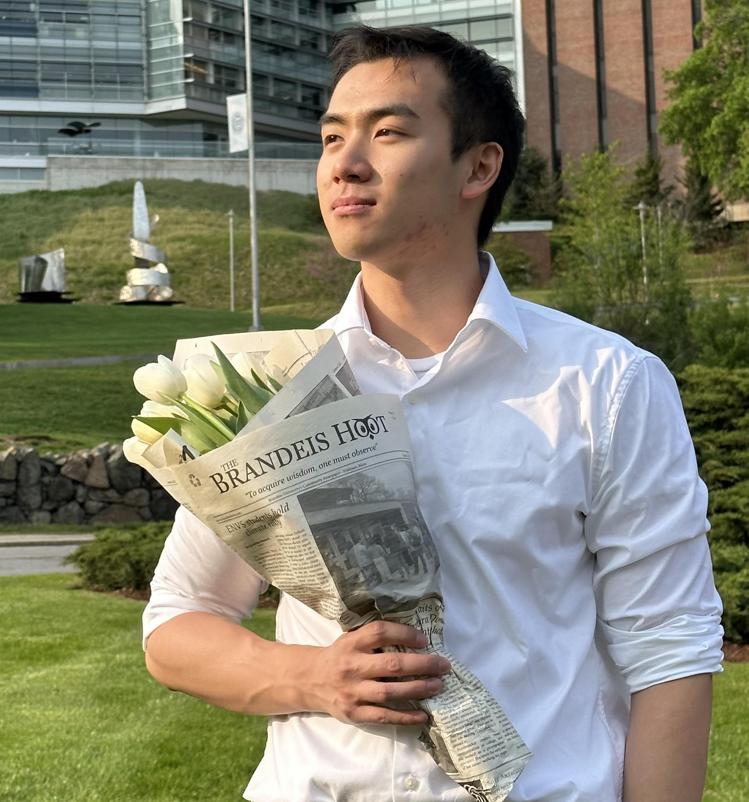
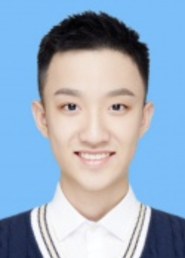

DM2 Lab: Data Mining towards Decision Making
"We develop data-driven computational methods and intelligent systems to facilitate decision making." -- dm_square
Data mining and NLP: User modeling, Recommender system, Fraud detection; Graph neural network, Graph anomaly detection; Information extraction, Taxonomy construction, Knowledge graph construction; Natural language generation, open-domain question answering, question generation, summarization; Intelligent assistance, NLP for education and mental health.
Faculty

|

|
Check our repositories!
|
Current Graduate Students

|
Qingkai Zeng: PhD candidate (2018-)
Information extraction, Taxonomy construction
|

|
Mengxia Yu: PhD student (2020-); CSE Select Fellowship
NLP, Scientific text mining
|

|
Lingbo Tong: PhD student (2020-); Psychology-CSE Joint Program
NLP, Mental health, Social media analysis
|

|
Zhihan Zhang: PhD student (2021-)
NLP, Question answering
|
Gang Liu: PhD student (2021-)
Graph machine learning
|
|
Eric Inae: PhD student (2022-); Dean's Fellowship
Graph machine learning
|

|
Hy Dang: PhD student (2022-)
Knowledge graph, Mental health
|

|
Noah Ziems: PhD student (2022-)
NLP, Question answering
|
Bang Nguyen: PhD student (2022-)
NLP, Question generation
|
|
Mengzhao Jia: PhD student (2023-)
NLP
|

|
Zhaoxuan Tan: PhD student (2023-)
NLP
|
|  |
Zheyuan (Frank) Liu: PhD student (2023-)
Graph machine learning
|
Current Undergraduate Students
|
John Flanagan: REU (2023-)
Large language model
|
David Liu: REU (2023-)
Large language model
|
Current Highschool Student
- Albert Lu (05/2022-): First year at Culver Academies. Research on NLP and text classification. Published a first-author paper at KDD 2023 workshop.
Past Graduate Students

|
Daheng Wang: PhD (2021)
User modeling, Graph representation learning, Dynamic graph modeling
First authored in 3 KDD, 1 WWW, 1 ICDM, 1 TKDE, 1 TNNLS, 1 TIST, 1 KDD-DLG best paper
First employment: Research Scientist at Amazon.com
|

|
Tong Zhao: PhD (2022) with Snap Fellowship
Graph machine learning, Data augmentation, Anomaly detection
First authored in 2 CIKM, 1 AAAI, 1 ICML, 1 IEEE TNNLS, 1 BigData
First employment: Research Scientist at Snap Inc.
|

|
Wenhao Yu: PhD (2023) with Bloomberg Fellowship
Question Answering and Large Language Model
First authored in 1 ICLR, 3 EMNLP, 2 ACL, 2 WWW, 1 NAACL, 1 ACM CSUR
First employment: Research Scientist at Tencent AI
|

|
Xueying Wang: Master's Degree (2019)
First authored in 1 WWW and 1 KAIS
Information extraction
Employment: Data Scientist at FedEx
|

|
Bhakti Sharma: Master's Degree (2020)
NLP, Sentiment analysis
Employment: SDE at VISO Trust
|

|
Jianing Li: Master's Degree (2020)
Deep transfer learning
|

|
Luke Siela: Master's Degree (2022)
Data Science
Employment: General Electric
|
Tianwen Jiang: Visiting PhD student (2018-2019)
Information extraction
Employment: Tencent
|
Past Undergraduate Students
- Alvin Alaphat (01/2020-05/2020): Predicting outcomes of NSF projects from abstracts.
- Xiangyu Dong (09/2019-05/2020): News generation using NLP.
- Zaitang Li (09/2019-05/2020): Survey on natural language generation.
- Matthew Malir (01/2018-05/2018): Actionable fraud detection.
- Bo Ni (09/2019-02/2021): Graph learning for fraud detection.
- Chan Hee (Luke) Song (09/2019-03/2020): Question answering for NER.
- Yuhan (Tina) Wu (09/2018-05/2019): Supervised topic modeling.

|
Michael Lee: REU (05/2020-05/2021)
Social media analysis
|

|
Fangcong Yin: REU (09/2020-08/2021)
Diverse text generation
|

|
Joseph Kuebler: REU (01/2021-05/2021)
Scientific fact extraction
First authored in 1 IEEE ICBK
|

|
Ann Hermann: REU (05/2020-08/2021)
Extracting profiles and social networks from Chinese history text
|

|
Ryan Pairitz: REU (01/2022-05/2022)
Graph machine learning
|
 |
Yunxiang Yan: REU (09/2021-08/2022)
Graph anomaly detection
|

|
Weike Fang: REU (01/2022-05/2023)
Natural langauge generation
|

|
Jackson Ballow: REU (01/2021-05/2023)
Graph machine learning
|
Past Highschool Students
- Ishita Masetty (09/2022-): NLP, large language model
- Jake Ciliberti (09/2022-): Data mining, graph analysis
- Michael Florin (09/2019-07/2020): Analyzing peer responses on Reddit to suicidal ideation.
- Eric Zhang (09/2018-07/2020): Predicting user gender based on clicked news articles.
- Rebekah Fang and Libby Garnett (09/2020-12/2021): Predicting the category of emotional support in responses to suicidal thoughts: Won the second place in the 2021 Northern Indiana Regional Science and Engineering Fair. Recommended to the 33rd Annual Hoosier Science and Engineering Fair (HSEF).
Group Photos
 September 2018 @ Cushing Hall
September 2018 @ Cushing Hall
|
July 2019 @ Fitzpatrick Hall |
 May 2022 @ Potato Creek State Park
May 2022 @ Potato Creek State Park
|
Projects
- NSF SHF: Medium: Collaborative Research: Semantically-Enhanced Software Traceability for Supporting Human-Centric Tasks
- NSF RETTL: Collaborative Research: Advancing STEM Online Learning by Augmenting Accessibility with Explanatory Captions and AI
- NSF III: Small: Comprehensive Methods to Learn to Augment Graph Data
- NSF III: Small: Intelligent Scientific Text Analytics with Knowledge-Augmented Abductive Reasoning
- NIH R21: Advancing Real-Time Suicide Risk Detection Through the Digital Phenotyping Smartphone Application Screenomics
- NSF CAREER: Synergistic Approaches for Specialized Intelligent Assistance
- CICP: AnalytiXIN Manufacturing Data Asset Research
- ONR: Towards Third Generation Network Intrusion Detection and Prevention Systems
- NSF RI: Small: Learning to Retrieve Structured Information for Summarization and Translation of Unstructured Text
- (completed) Condé Nast: Representation Learning for Modeling and Predicting User Engagement and Propensity for Conversion Through the Engagement Funnel
- (completed) ND International: Digital Empires: Structured Biographical and Social Network Analysis of Early Chinese Empires
- (completed) NSF CRII: III: Complementarity Learning for Contextual Behavior Modeling

|

|

|

|

|

|

|

|

|

|

|